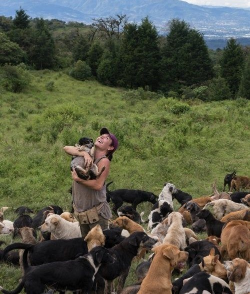
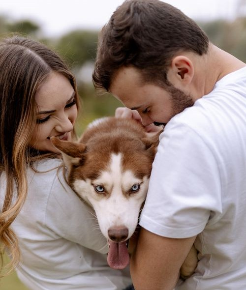

CONOCE SOBRE NOSOTROS
- Huellitas Argentinas -
Nuestra Historia
Motivados por una sensibilidad compartida hacia los animales y deseando colaborar en un proyecto solidario al servicio de los mismos, ante la problemática y dificultad para poder encontrar a nuestros compañeros caninos perdidos, decidimos desarrollar este proyecto pionero con el objetivo de facilitar y agilizar al máximo tanto la búsqueda de mascotas perdidas así como el reencuentro con sus dueños de las mismas en caso de ser encontradas.
Nuestro Equipo
Somos dos hermanos que amamos a los perros. Vivimos con ellos en el campo y la ciudad constantemente. Trabajamos con perros altamente sociables. Lo más importante es que todos estén cómodos y a gusto con la manada, coman, jueguen y descansen sin problemas. Por eso somos muy exigentes a la hora de entregarlos con su nueva familia. Nos aseguramos de que les brinden el mismo amor y comprensión que les brindamos nosotros.
